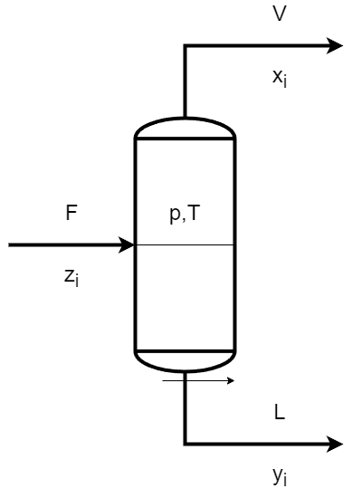

# Datos
T = 400 # K
A_pentano = 3.97786
B_pentano = 1064.840
C_pentano = -41.136
A_hexano = 4.00139
B_hexano = 1170.875
C_hexano = -48.833
A_ciclohexano = 3.93002
B_ciclohexano = 1182.774
C_ciclohexano = -52.532
x_pentano = 0.5
x_hexano = 0.3
x_ciclohexano = 0.2Cálculos Flash
Equilibrio VLE
Separacións FLASH
Puntos orballo e burbulla

Os cálculos de flash úsanse para procesos de equilibrio vapor/líquido (VLE). Un proceso típico que require cálculos de flash, é o representado na figura 1. Un caudal de alimentación dunha mestura de compoñentes \(F\) se separada nun vapor \(V\) e un líquido \(L\).
En principio, os cálculos de flash son sinxelos e implican combinar o as ecuacións do equilibrio líquido-vapor cos balances de materia dos compoñentes da mestura e, nalgúns casos, o balance de enerxía.
Algúns cálculos de flash son: 1. Punto de burbulla a unha temperatura \(T\) dada (fácil). 2. Punto de burbulla a unha presión \(p\) dada (supón facer un cálculo iterativo en T). 3. Punto de orballo a unha temperatura \(T\) dada (fácil). 4. Punto de orballo a una presión \(p\) dada (supón facer un cálculo iterativo en T). 5. Flash dadas \(p\) e \(T\) (relativamente fácil). 6. Flash dadas \(p\) e \(H\) (flash “estándar”, por exemplo, para un tanque flash colocado despois dunha válvula). 7. Flash dadas \(p\) e \(S\) (por exemplo, para a turbina de condensación). 8. Flash dadas \(U\) e \(V\) (por exemplo, para a simulación dinámica dun tanque adiabático).
Os tres últimos flashes son un pouco máis complicados xa que requiren o cálculodo balance de enerxía e as relacións de equilibrio para o cálculo de \(H\), \(S\), etc.
Nos exemplos de cálculos flash que se propoñen aquí, supoñemos que o equilibrio entre o líquido e o vapor (VLE) está dado en forma de valores K, é dicir: é dicir,
\[ y_i=K_ix_i \]
onde \(y_i\) son as fraccións molares da fase vapor e \(x_i\) as fraccións molares da fase líquida para cada compoñente \(i\). En xeral, o \(K\) depende da temperatura \(T\), presión \(p\) e composición (tanto \(x_i\) como \(y_i\)). Supondremos que as mesturas son ideais e utilizaremos a Lei de Raoult:
\[ K_i = \frac {p_i^{sat}(T)} {p} \]
Neste caso \(K_i\) dependen só de \(T\) e \(p\):
Nos exemplos, calculamos a presión de vapor ou presión de saturación, \(p_i^{sat}(T)\), usando os parámetros de Antoine indicados na táboa 1.
indicado na táboa 7.2.Onde yi é a fracción de mole en fase de vapor e xi a fracción de mol de fase líquida para compoñente i. En xeral, o “valor K” depende da temperatura T, presión p e composición (tanto xi como yi). Aceptamos principalmente mesturas ideais e utilizamos a lei de Raoult: Neste caso \(K_i\) depende de \(T\) e \(p\) só. A lei de Raoult:
\[ Ki = psat_i (T) / p \]
Nos exemplos, calculamos o psat de presión de vapor (\(T\)) usando os parámetros de Antoine dados na táboa 1.
Táboa 1: Datos das constantes de Antoine, temperatura de fervura e entalpía de vaporización para resolver os problemas. A os valores das constantes da Ecuación de Antoine en esta táboa son para as presións de vapor expresadas en bar, as temperaturas en K e as entalpías en J/mol.
| Composto | A | B | C | Tb (K) | \(\Delta\) Hvap |
|---|---|---|---|---|---|
| Pentano (C5H12) | 3.97786 | 1064.840 | -41.136 | 309.22 | 25790 |
| Hexano (C6H14) | 4.00139 | 1170.875 | -48.833 | 341.88 | 28850 |
| Ciclohexano (C6H12) | 3.93002 | 1182.774 | -52.532 | 353.93 | 29970 |
| Metanol (CH3OH) | 5.20277 | 1580.080 | -33.650 | 337.69 | 35210 |
| Auga (H2O) | 5.11564 | 1687.537 | -42.98 | 373.15 | 40660 |
| Amoníaco (NH3) | 4.48540 | 926.132 | -32.98 | 239.82 | 23350 |
| Propano (C3H8) | 3.92828 | 803.997 | -26.11 | 231.02 | 19040 |
| Octano (C8H18) | 4.05075 | 1356.360 | -63.515 | 398.82 | 34410 |
| Dodecano (C12H26) | 4.12285 | 1639.270 | -91.310 | 489.48 | 43400 |
| Benceno (C6H6) | 3.98523 | 1184.24 | -55.578 | 353.24 | 30720 |
| Tolueno (C7H8) | 4.05043 | 1327.62 | -55.525 | 383.79 | 33180 |
Táboa 1: Datos das constantes de Antoine, temperrtura de fervura e entalpía de vaporización para resolver os problemas. A os valores das constantes da Ecuación de Antoine en esta táboa son para as presións de vapor expresadas en bar, as temperaturas en K e as entalpías en J/mol.
Cálculos de puntos de burbulla
Consideremos primeiro os cálculos de punto de burbulla, neste caso dannos a composición da fase líquida \(x_i\) (corresponde ao caso en que V é moi pequena (V \(\geq\) 0) e \(x_i\) = \(z_i\) na Figura 1).
O punto de burbulla dun líquido é o punto no que o líquido xusto comeza a evaporarse (ferver), é dicir, cando se forma a primeira burbulla de vapor. Se coñecemos a temperatura, entón debemos baixar a presión ata que se forme a primeira burbulla. Se coñecemos a presión. debemos aumentar a temperatura ata que se forme a primeira burbulla. Nos dous casos, isto corresponde axustar \(T\) ou \(p\) ata que a suma das fraccións de vapor de todos os compoñenetes sea a unidade, \(\sum y_i\) = 1 ou:
\[ \sum K_i x_i = 1 \]
onde as \(x_i\) son ceñecidas. Para o caso ideal, no que se cumpre a Lei de Raoult:
\[ \Sigma_{i} \underbrace{x_{i} p_{i}^{\text {siat }}(T)}_{p_{i}}=p \]
Exemplo 1. Punto de burbulla a unha temperatura dada.
Enunciado
Unha mestura líquida contén 50% de moles de pentan, 30% de moles de hexano e 20% de moles de ciclohexano. Calcular a presión do punto de burbulla cando, á temperatura constante de \(T\) = 400 K, se reduce progresivamente a presión. Cal é a presión da primeira burbulla que se fiorma e a composición do primero vapor que se forma supoñendo comportamento ideal (Lei de Raoult).
Solución
Debemos atopar a \(p\) que satisfai a ecucaión:
\[ \Sigma_{i} \underbrace{x_{i} p_{i}^{\text {siat }}(T)}_{p_{i}}=p \]
Empezamos calculando a presi´n de vapor de cada compoñente da mestura.
p_sat_pentano = 10 ** (A_pentano - B_pentano / ( T + C_pentano))
p_sat_hexano = 10 ** (A_hexano - B_hexano / ( T + C_hexano))
p_sat_ciclohexano = 10 ** (A_ciclohexano - B_ciclohexano / ( T + C_ciclohexano))
print('Presión de saturación do pentano = {:8.4f} a {:d} K'.format(p_sat_pentano, T))
print('Presión de saturación do hexano = {:8.4f} a {:d} K'.format(p_sat_hexano, T))
print('Presión de saturación do ciclohexano = {:8.4f} a {:d} K ='.format(p_sat_ciclohexano, T))Presión de saturación do pentano = 10.2473 a 400 K
Presión de saturación do hexano = 4.6468 a 400 K
Presión de saturación do ciclohexano = 3.3577 a 400 K =# presións de vapor
p_pentano = x_pentano * p_sat_pentano
p_hexano = x_hexano * p_sat_hexano
p_ciclohexano = x_ciclohexano * p_sat_ciclohexano
p_burbulla = p_pentano + p_hexano + p_ciclohexano
print('Presión de burbulla a {:2d} K = {:.4f} bar'.format(T,p_burbulla))Presión de burbulla a 400 K = 7.1892 barNo punto de burbulla a fase líquida ten unha composición coñecida (os datos do problema). Polo tanto, aplicando Raoult, a presión de vapor de cada compoñente é:
\[ p_{pentano} = x_{pentano} \cdot p_{pentano}^{sat} \\ p_{hexano} = x_{hexano} \cdot p_{hexano}^{sat} \\ p_{ciclohexano} = x_{ciclohexano} \cdot p_{ciclohexano}^{sat} \]
E a presión total:
\[ p_{burbulla} = p_{pentano} + p_{hexano} + p_{ciclohexano} \]
# Cálculo das yi
y_pentano = p_pentano / p_burbulla
y_hexano = p_hexano / p_burbulla
y_ciclohexano = p_ciclohexano / p_burbulla
print('y_pentano = {:6.4f}'.format(y_pentano))
print('y_hexano = {:6.4f}'.format(y_hexano))
print('y_ciclohexano = {:6.4f}'.format(y_ciclohexano))y_pentano = 0.7127
y_hexano = 0.1939
y_ciclohexano = 0.0934Se podería sofisticar un pouco mais o código facendo uso do diccionario de datos e das funcións anónimas de python, as funcións lamba. Fagamos o mesmo cálculo
compostos = ['pentano','hexano','ciclohexano']
Psat = dict()
Psat['pentano'] = lambda T: 10**(3.97786 - 1064.840/(-41.136 + T)) # log p en mar T en ºC
Psat['hexano'] = lambda T: 10**(4.00139 - 1170.875/(-48.833 + T)) # log p en mar T en ºC
Psat['ciclohexano'] = lambda T: 10**(3.93002 - 1182.774/(-52.532 + T)) # log p en mar T en ºC
species = ['acetone','benzene','toluene']
z = dict()
z['pentano'] = 0.5
z['hexano'] = 0.3
z['ciclohexano'] = 0.2# Como calculamos puntos de burbulla
x = z
for s in compostos:
x[s] = z[s]T = 400 # K
Pbub =sum([x[s]*Psat[s](T) for s in compostos])
for s in compostos:
print(f'Presión de vapor do {s} = {x[s]*Psat[s](T):.2f} bar')
print('Presión de burbulla a {:2d} K = {:.4f} bar'.format(T,Pbub)) Presión de vapor do pentano = 5.12 bar
Presión de vapor do hexano = 1.39 bar
Presión de vapor do ciclohexano = 0.67 bar
Presión de burbulla a 400 K = 7.1892 barfor s in compostos:
print(f'Fracción molar no vapor de {s} = {x[s]*Psat[s](T)/Pbub:.4f}')Fracción molar no vapor de pentano = 0.7127
Fracción molar no vapor de hexano = 0.1939
Fracción molar no vapor de ciclohexano = 0.0934Exemplo 2. Punto de burbulla a presión dada.
Considera a mesma mestura líquida cun 50% molar de pentano, un 30% molar de hexano (2) e un 20% molar de ciclohexano (3). A \(p\) = 5 bar, aumenta gradualmente a temperatura. Cal é a temperatura e a composición da burbulla do primeiro vapor que se forma?.
Solución.
Neste caso imos calcular a temperatura de burbulla apresión constante (caso 2), \(p\) e \(x_i\) coñécense. polo que a ecuación:
\[ \Sigma_{i} \underbrace{x_{i} p_{i}^{\text {siat }}(T)}_{p_{i}}=p \]
convértese nunha ecuación implícita en \(T\) que ten que ser resolta por un método numérico comp pode ser unha iteración. No noso caso usaremos unha librería de python.
Primeiro imos facelo cun código simple, usando o estilo do cálculo anterior. Xa temos cargado \(x[s]\) con valores de \(z[s}\), onde \([s]\) son os compostos:
x_pentano = 0.5
x_hexano = 0.3
x_ciclohexano = 0.2
P = 5 # bar
def Tbub(T):
return P - x_pentano*10**(A_pentano-B_pentano/(T+C_pentano))-x_hexano*10**(A_hexano-B_hexano/(T+C_hexano))-x_ciclohexano*10**(A_ciclohexano-B_ciclohexano/(T+C_ciclohexano))
from scipy.optimize import fsolve
T_guess = 400 # K
Tsol = fsolve(Tbub, T_guess)
print (f'A temperatura de burbulla, a presión de {P:.1f} bar é de {Tsol[0]:.2f} K')A temperatura de burbulla, a presión de 5.0 bar é de 382.64 KNo caso de querer usar un estilo mais condensado, podemos facer como antes e tirar de funcións lambda e diccionario de datos. O código sería o seguinte:
from scipy.optimize import fsolve
x = z
T_guess = 400 # K
P = 5 # bar
def Tbub(compostos,x):
return fsolve(lambda T : sum([x[s]*Psat[s](T)/P for s in compostos]) - 1.0,T_guess)[0]
def ybub(species,x):
return {s: x[s]*Psat[s](Tbub(compostos,x))/P for s in compostos}
T = Tbub(compostos,x)
y = ybub(compostos,x)
print(f'A temperatura de burbulla da mestura é {T:.2f} ºK')
for s in compostos:
print(f'A fracción molar no vapor do compoñente [s] da mestura é {y[s]:.4f}')A temperatura de burbulla da mestura é 382.64 ºK
A fracción molar no vapor do compoñente [s] da mestura é 0.7240
A fracción molar no vapor do compoñente [s] da mestura é 0.1870
A fracción molar no vapor do compoñente [s] da mestura é 0.0889Cálculos do punto de orballo
Consideremos a continuación os cálculos do punto de orballo. Neste caso, a composición en fase de vapor \(y_i\) dáse (corresponde ao caso en que L é moi pequeno (L \(\geqq\) 0) e \(y_i = z_i\).
O punto de orballo dun vapor (gas) é o punto onde o vapor comeza a condensar, é dicir, cando se forma a primeira pinga de líquido. Se mentén a temperatura, entón debemos aumentar a presión ata que se forme o primeiro líquido. Se a o que se mantén é a presión, débese baixar a temperatura ata que se forme o líquido. En ambolosdous casos, isto corresponde a axustar \(T\) ou \(p\) ata que se cumpra qie:
\[ \sum_i x_i = 1 \]
ou
\[ \sum_i \frac {y_i}{K_i} = 1 \]
onde \(y_i\) ven dado. Para unha mestura ideal onde se cumpre a \(lei de Raoult\) dá:
\[ \sum_i \frac { y_i } { P_i^sat (T)} = \frac { 1 } { p } \]
Exemplo 3. Punto de orballo a determinada temperatura T.
Unha mestura de vapor contén 50% pentano (1), 30% de hexano (2) e 20% de ciclohexano (3) (todo en mol-%), é dicir, \(y_1 = 0.5\), \(y_2 = 0.3\) 3 \(y_3 = 0.2\). A \(T\) = 400 K, e a presión aumentase gradualmente. Cal é a presión do punto de orballo e a composición do primeiro líquido que se forma?. Supón mestura líquida ideal e gas ideal (lei de Raoult).
Solución.
A tarefa é atopar o valor de \(p\) que satisfaga a ecuación anterior. Como se dá \(T\) constante, isto é trivial. Simplemente podemos calcular a inversa de \(p\) a partires da ecuación:
T = 400 # K
y_pentano = 0.5
y_hexano = 0.3
y_ciclohexano = 0.2
p_sat_pentano = 10 ** (A_pentano - B_pentano / ( T + C_pentano))
p_sat_hexano = 10 ** (A_hexano - B_hexano / ( T + C_hexano))
p_sat_ciclohexano = 10 ** (A_ciclohexano - B_ciclohexano / ( T + C_ciclohexano))
p = 1 / ( y_pentano / p_sat_pentano + y_hexano /p_sat_hexano + y_ciclohexano / p_sat_ciclohexano )
x_pentano = y_pentano * p / p_sat_pentano
x_hexano = y_hexano * p / p_sat_hexano
x_ciclohexano = y_ciclohexano * p / p_sat_ciclohexano
print(f'Á temperatura de 400 K, a presión de orballo da mestura é de {p:.2f} bar.')
print(f' A fracción molar de pentano no líquido é {x_pentano:.4f}')
print(f' A fracción molar de hexano no líquido é {x_hexano:.4f}')
print(f' A fracción molar de ciclohexano no líquido é {x_ciclohexano:.4f}')Á temperatura de 400 K, a presión de orballo da mestura é de 5.78 bar.
A fracción molar de pentano no líquido é 0.2822
A fracción molar de hexano no líquido é 0.3734
A fracción molar de ciclohexano no líquido é 0.3445Facéndoo coas funcións lambda e o diccionario de datos:
y = z
T = 400 # K
Porb = 1 / (sum([y[s]/Psat[s](T) for s in compostos]))
for s in compostos:
print(f'Presión de vapor do {s} = {x[s]*Psat[s](T):.2f} bar')
print('Presión de orballo a {:2d} K = {:.4f} bar'.format(T,Porb)) Presión de vapor do pentano = 5.12 bar
Presión de vapor do hexano = 1.39 bar
Presión de vapor do ciclohexano = 0.67 bar
Presión de orballo a 400 K = 5.7830 barE as fraccións molares no líquido:
for s in compostos:
print(f'Fracción molar no vapor de {s} = {y[s]*p/Psat[s](T):.4f}')Fracción molar no vapor de pentano = 0.2822
Fracción molar no vapor de hexano = 0.3734
Fracción molar no vapor de ciclohexano = 0.3445Exemplo 4. Punto de orballo á presión dada p.
Considere a mesma mestura de vapor con 50% pentano (1), 30% hexano (2) e 20% ciclohexano (3). En \(p\) = 5 bar, a temperatura báixase gradualmente. Cal é a temperatura do punto de orballo e a composición do primeiro líquido que condensa?.
Solución.
Neste caso, dannos \(p\) e \(y_i\) e coñecemos unha ecuación implícita para \(T\) que debe resolverse numericamente (por exemplo, usando fsolve). Imos aló:
y_pentano = 0.5
y_hexano = 0.3
y_ciclohexano = 0.2
def Torb(T):
return 1/p-y_pentano/(10**(A_pentano-B_pentano/(T+C_pentano)))-y_hexano/(10**(A_hexano-B_hexano/(T+C_hexano)))-y_ciclohexano/(10**(A_ciclohexano-B_ciclohexano/(T+C_ciclohexano)))
p = 5
from scipy.optimize import fsolve
T_guess = 400 # K
Tsol = fsolve(Torb, T_guess)
print (f'A temperatura de burbulla, a presión de {P:.1f} bar é de {Tsol[0]:.2f} K')A temperatura de burbulla, a presión de 5.0 bar é de 393.30 KPara calcular as composición do líquido recurrimos a:
\[ x_i = \frac { y_i p } { P_i^{sat} } \]
Logo:
T = Tsol[0]
p_sat_pentano = 10 ** (A_pentano - B_pentano / ( T + C_pentano))
p_sat_hexano = 10 ** (A_hexano - B_hexano / ( T + C_hexano))
p_sat_ciclohexano = 10 ** (A_ciclohexano - B_ciclohexano / ( T + C_ciclohexano))
x_pentano = y_pentano * p / p_sat_pentano
x_hexano = y_hexano * p / p_sat_hexano
x_ciclohexano = y_ciclohexano * p / p_sat_ciclohexano
print(f' A fracción molar de pentano no líquido é {y_pentano * p / p_sat_pentano:.4f}')
print(f' A fracción molar de hexano no líquido é {x_hexano:.4f}')
print(f' A fracción molar de ciclohexano no líquido é {x_ciclohexano:.4f}') A fracción molar de pentano no líquido é 0.2778
A fracción molar de hexano no líquido é 0.3748
A fracción molar de ciclohexano no líquido é 0.3474